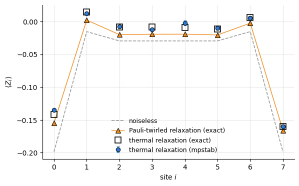
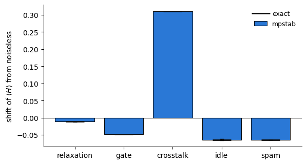

Device-level noise: relaxation, crosstalk and idling¶
The noise tutorial covers Pauli and coherent errors placed after gates. Real devices do more:
qubits relax towards \(|0\rangle\) (T1) and dephase (T2), a channel that is not unital and not a Pauli channel;
a two-qubit gate disturbs its spectators, the neighbours it does not act on (crosstalk);
qubits waiting for others keep decohering, and coupled idle pairs pick up an always-on :math:`ZZ`;
states are prepared imperfectly, and \(1\to0\) readout flips are usually likelier than \(0\to1\).
This notebook builds such a device model, checks it against exact density-matrix simulation, breaks the error down by source, shows why the non-unital part cannot be replaced by its Pauli twirl, and runs the same model at a size no density matrix reaches.
How general channels are simulated. Any channel can be written in the Pauli basis as \(\mathcal{E}(\rho) = \sum_{A,B} \chi_{AB}\, A\rho B\). Its diagonal \(\chi_{AA}\) is a Pauli channel (the Pauli twirl), handled as Pauli faults: each one flips the signs of some later dressed rotations. The off-diagonal coherences \(\chi_{AB}\) act with \(A\) on the ket and \(B\) on the bra, so they flip the two sides differently and contribute a transition amplitude \(\langle\phi_B| B O A |\phi_A\rangle\) between two MPS. For amplitude damping, the coherences \((I, Z)\) and \((X, Y)\) are exactly what pushes population back to \(|0\rangle\). Configurations with zero or one noisy location are still summed exactly; those with more are sampled, with coherences drawn by \(|\chi_{AB}|\) and their complex phases carried as weights (a quasi-probability).
[1]:
import time
from collections import Counter
import matplotlib.pyplot as plt
import numpy as np
from qibo import gates
from mpstab import HSMPO
from mpstab.hamiltonians import pauli_string_to_hamiltonian
from mpstab.models.ansatze import ParametricKickedIsing
from mpstab.noise import (
CoherentError,
DepolarizingError,
NoiseModel,
PauliError,
ReadoutError,
StatePreparationError,
ThermalRelaxationError,
)
from mpstab.noise.compile import compile_noise
from mpstab.noise.events import KrausChannel
np.set_printoptions(precision=4, suppress=True)
BLUE, ORANGE, INK, GREY = "#2a78d6", "#eb8a1c", "#0b0b0b", "#9a9a9a"
The circuit and the observables¶
A kicked Ising chain on 8 qubits, as in the basic tutorial: its couplings are CNOT · RZ · CNOT, so CNOTs are the two-qubit gates, and delta_h sets how much magic the circuit holds. We look at two observables: the nearest-neighbour energy \(\sum_i Z_iZ_{i+1}\) and the magnetization \(\frac1n\sum_i Z_i\), which is what relaxation acts on most directly.
[2]:
NQUBITS = 8
ansatz = ParametricKickedIsing(nqubits=NQUBITS, n_steps=3, delta_h=0.2)
circuit = ansatz.circuit
hsmpo = HSMPO(ansatz)
def z_string(*sites, n=NQUBITS):
return "".join("Z" if q in sites else "I" for q in range(n))
energy = {z_string(i, i + 1): 1.0 for i in range(NQUBITS - 1)}
magnetization = {z_string(i): 1.0 / NQUBITS for i in range(NQUBITS)}
print(f"{NQUBITS} qubits, {len(circuit.queue)} gates, {hsmpo.n_magic_gates} magic")
print(f"noiseless energy {hsmpo.expectation(energy):+.5f}")
print(f"noiseless magnetization {hsmpo.expectation(magnetization):+.5f}")
8 qubits, 111 gates, 24 magic
noiseless energy +0.56761
noiseless magnetization -0.06829
A device noise model¶
The qubits sit on a line. Times are in microseconds; the values are typical of current superconducting devices, with a single-qubit gate of 30 ns and a CNOT of 80 ns.
source |
model |
rule |
|---|---|---|
relaxation during gates |
|
|
two-qubit gate error |
|
|
crosstalk |
coherent \(ZZ\) between each CNOT qubit and its spectators |
|
idling |
relaxation for one moment, and a residual \(ZZ\) on idle coupled pairs |
|
preparation |
\(X\) flip of the initial state |
|
readout |
asymmetric bit flips, \(p_{0\to1} < p_{1\to0}\) |
|
add_crosstalk(error, coupling, gate)puts a two-qubit error on every(gate qubit, spectator)edge of the coupling graph, a one-qubit error on every spectator.add_idle(error, qubits, coupling)puts it on every qubit, or every coupled pair, left idle in a moment. Moments layer the gate queue in order: a gate starts right after the last gate on its qubits, and never before the gate queued ahead of it.A coherent error joins the rotation chain like a magic gate, so a coherent \(ZZ\) on every idle pair of every moment would make the chain much longer. The residual idle \(ZZ\) is usually suppressed by dynamical decoupling or twirled by randomized compiling anyway, so we use
CoherentError.twirled(): the stochastic \(ZZ\) error the rotation becomes under twirling, which costs nothing.
device_noise builds the model from a set of sources, so we can switch them on one by one later, and can replace the thermal relaxation by its Pauli twirl.
[3]:
T1, T2 = 100.0, 80.0 # microseconds
T_1Q, T_2Q = 0.03, 0.08 # gate durations, microseconds
LINE = [(q, q + 1) for q in range(NQUBITS - 1)]
SOURCES = ("relaxation", "gate", "crosstalk", "idle", "spam")
def pauli_twirl(error):
# The Pauli channel on the diagonal of a one-qubit channel's process matrix.
chi = KrausChannel(0, (0,), error.kraus).chi
return PauliError({p: chi[(p, p)].real for p in "XYZ" if (p, p) in chi})
def device_noise(sources=SOURCES, relaxation="exact", crosstalk="coherent", coupling=LINE):
def relax(duration):
error = ThermalRelaxationError(T1, T2, duration)
return error if relaxation == "exact" else pauli_twirl(error)
noise = NoiseModel()
if "relaxation" in sources:
noise.add(relax(T_1Q), (gates.RX, gates.RZ, gates.H))
noise.add(relax(T_2Q), gates.CNOT)
if "gate" in sources:
noise.add(DepolarizingError(5e-3), gates.CNOT)
if "crosstalk" in sources:
zz = CoherentError("ZZ", 0.03)
noise.add_crosstalk(zz if crosstalk == "coherent" else zz.twirled(), coupling, gates.CNOT)
if "idle" in sources:
noise.add_idle(relax(T_2Q))
noise.add_idle(CoherentError("ZZ", 0.02).twirled(), coupling=coupling)
if "spam" in sources:
noise.add(StatePreparationError(0.005))
noise.add(ReadoutError(0.01, 0.03))
return noise
noise = device_noise()
events = noise.events(circuit)
print(f"{len(events)} noise events:", dict(Counter(type(e).__name__ for e in events)))
for rule in noise.rules:
print(f" {rule.kind:12s} {type(rule.error).__name__:24s} {len(rule.events(circuit)):4d} events")
926 noise events: {'KrausChannel': 536, 'PauliChannel': 318, 'CoherentRotation': 72}
gate ThermalRelaxationError 69 events
gate ThermalRelaxationError 84 events
gate DepolarizingError 42 events
crosstalk CoherentError 72 events
idle ThermalRelaxationError 383 events
idle PauliError 268 events
preparation StatePreparationError 8 events
readout ReadoutError 0 events
events resolves the model on the circuit. The relaxation and idle rules become KrausChannel events, the crosstalk becomes CoherentRotations, and the rest are Pauli channels. Readout acts on the measured bits rather than the state, so it has no events: it is folded into the observable. With asymmetric flips, a measured Pauli factor \(P\) reads as \((1-p_0-p_1)P + (p_1-p_0)I\), so a term also feeds its lower-weight subterms and the constant:
[4]:
constant, terms = noise.readout_observable({z_string(0, 1): 1.0}, NQUBITS)
print("Z0 Z1 as read out:", f"{constant:+.6f} +", {p: round(float(c), 6) for p, c in terms.items()})
Z0 Z1 as read out: +0.000400 + {'ZZIIIIII': 0.9216, 'ZIIIIIII': 0.0192, 'IZIIIIII': 0.0192}
Checking against the exact density matrix¶
noise.apply(circuit) gives the same noisy circuit as a qibo density-matrix circuit, with the Kraus channels as KrausChannel gates. Together with readout_observable it gives the exact value.
[5]:
def exact_expectation(noise, observable, circuit=circuit):
constant, terms = noise.readout_observable(observable, circuit.nqubits)
rho = noise.apply(circuit)().state()
return constant + sum(
c * pauli_string_to_hamiltonian(p).expectation_from_state(rho) for p, c in terms.items()
)
for name, observable in (("energy", energy), ("magnetization", magnetization)):
start = time.perf_counter()
result = hsmpo.noisy_expectation(observable, noise, n_samples=1000, seed=0)
elapsed = time.perf_counter() - start
exact = exact_expectation(noise, observable)
print(f"{name}: mpstab {result.mean:+.5f} +- {result.stderr:.5f} ({elapsed:.1f} s),"
f" exact {exact:+.5f}, deviation {abs(result.mean - exact) / result.stderr:.1f} sigma")
print(f" stratum weights {np.round(result.stratum_weights, 3)},"
f" {result.n_patterns} sign patterns, {result.n_transitions} transition amplitudes")
[Qibo 0.3.6|INFO|2026-11-17 23:03:38]: Using numpy backend on /CPU:0
energy: mpstab +0.62243 +- 0.00320 (24.4 s), exact +0.62524, deviation 0.9 sigma
stratum weights [0.546 0.546 0.391], 711 sign patterns, 1761 transition amplitudes
magnetization: mpstab -0.01722 +- 0.00069 (23.1 s), exact -0.01760, deviation 0.5 sigma
stratum weights [0.546 0.546 0.391], 711 sign patterns, 1761 transition amplitudes
The stratum weights no longer sum to one: coherences enter with \(|\chi_{AB}|\), so the total is a quasi-probability mass larger than one, and the excess sets how much the sampled part costs in variance. n_transitions counts the transition amplitudes, the price of the coherences.
Relaxation is not a Pauli channel¶
A common shortcut replaces relaxation by its Pauli twirl, which is a Pauli channel and much cheaper. The twirl keeps the decay of coherences but drops the drift towards \(|0\rangle\): on average it pushes every \(\langle Z\rangle\) towards 0 rather than towards \(+1\). The magnetization profile shows the difference. The exact profile comes from the density matrix; mpstab evaluates each \(\langle Z_i\rangle\) with its own light cone.
[6]:
sites = np.arange(NQUBITS)
ideal_z = np.array([hsmpo.expectation(z_string(i)) for i in sites])
# Without preparation and readout errors, to compare what the gates do to the state.
state_noise = device_noise(sources=("relaxation", "gate", "crosstalk", "idle"))
state_twirl = device_noise(sources=("relaxation", "gate", "crosstalk", "idle"), relaxation="twirled")
rho_exact = state_noise.apply(circuit)().state()
rho_twirl = state_twirl.apply(circuit)().state()
exact_z = np.array([pauli_string_to_hamiltonian(z_string(i)).expectation_from_state(rho_exact) for i in sites])
twirl_z = np.array([pauli_string_to_hamiltonian(z_string(i)).expectation_from_state(rho_twirl) for i in sites])
start = time.perf_counter()
mpstab_z = [hsmpo.noisy_expectation(z_string(i), state_noise, n_samples=300, seed=i) for i in sites]
print(f"{NQUBITS} single-site values in {time.perf_counter() - start:.1f} s")
8 single-site values in 76.4 s
[7]:
fig, ax = plt.subplots(figsize=(6.5, 4))
ax.plot(sites, ideal_z, "--", color=GREY, lw=1.2, label="noiseless")
ax.plot(sites, twirl_z, "^-", color=ORANGE, ms=7, mec=INK, mew=0.8, lw=1, label="Pauli-twirled relaxation (exact)")
ax.plot(sites, exact_z, "s", color=INK, ms=9, mfc="none", mew=1.2, label="thermal relaxation (exact)")
ax.errorbar(sites, [r.mean for r in mpstab_z], yerr=[r.stderr for r in mpstab_z], fmt="o", color=BLUE,
ms=6, mec=INK, mew=0.8, capsize=2, label="thermal relaxation (mpstab)")
ax.set_xlabel("site $i$")
ax.set_ylabel(r"$\langle Z_i \rangle$")
ax.spines[["top", "right"]].set_visible(False)
ax.grid(alpha=0.3)
ax.legend(frameon=False, fontsize=9)
plt.show()
shift = exact_z - twirl_z
print("exact - twirled, per site:", shift)
print(f"mean bias of the twirl on <Z_i>: {shift.mean():+.4f}")

exact - twirled, per site: [0.0134 0.0119 0.0116 0.0108 0.0099 0.0091 0.0083 0.0058]
mean bias of the twirl on <Z_i>: +0.0101
Error budget¶
Which source matters most? Switch them on one at a time and compare each shift of the energy from its noiseless value. Each bar is one mpstab run, and the black marks are the exact values. Each source alone takes a second or two; the full model costs more because its noisy locations combine, which is what the sampled \(k \ge 2\) stratum pays for.
[8]:
ideal_energy = hsmpo.expectation(energy)
budget = {}
for source in SOURCES:
alone = device_noise(sources=(source,))
start = time.perf_counter()
result = hsmpo.noisy_expectation(energy, alone, n_samples=500, seed=1)
budget[source] = (
result.mean - ideal_energy,
result.stderr,
exact_expectation(alone, energy) - ideal_energy,
time.perf_counter() - start,
)
print(f"{source:10s} shift {budget[source][0]:+.5f} +- {budget[source][1]:.5f}"
f" (exact {budget[source][2]:+.5f}, {budget[source][3]:.1f} s)")
relaxation shift -0.01169 +- 0.00016 (exact -0.01166, 2.1 s)
gate shift -0.04872 +- 0.00011 (exact -0.04869, 1.6 s)
crosstalk shift +0.31065 +- 0.00000 (exact +0.31065, 0.3 s)
idle shift -0.06417 +- 0.00168 (exact -0.06426, 3.6 s)
spam shift -0.06519 +- 0.00001 (exact -0.06519, 0.4 s)
[9]:
fig, ax = plt.subplots(figsize=(6.5, 3.6))
x = np.arange(len(SOURCES))
shifts, errors, exacts, _ = map(np.array, zip(*budget.values()))
ax.bar(x, shifts, yerr=errors, color=BLUE, edgecolor=INK, lw=0.8, capsize=3, label="mpstab")
ax.plot(x, exacts, "_", color=INK, ms=26, mew=2, label="exact")
ax.axhline(0, color=INK, lw=0.8)
ax.set_xticks(x, SOURCES)
ax.set_ylabel(r"shift of $\langle H\rangle$ from noiseless")
ax.spines[["top", "right"]].set_visible(False)
ax.legend(frameon=False, fontsize=9)
plt.show()

Coherent or twirled crosstalk?¶
The error budget is dominated by the coherent crosstalk. That is no accident: the couplings of this circuit are themselves \(ZZ\) rotations (CNOT · RZ · CNOT), so a spurious \(ZZ\) on a neighbouring pair shifts the Ising angles directly, and these shifts add up coherently, in amplitude, from step to step.
Under randomized compiling the same error becomes its Pauli twirl, a stochastic \(ZZ\) with probability \(\sin^2(\theta/2)\), which only adds in probability. It is also much cheaper: each coherent rotation joins the chain of dressed rotations like a magic gate, while the twirl leaves the chain alone.
[10]:
for mode in ("coherent", "twirled"):
model = device_noise(sources=("crosstalk",), crosstalk=mode)
compiled = compile_noise(hsmpo, model.events(circuit))
start = time.perf_counter()
result = hsmpo.noisy_expectation(energy, model, n_samples=500, seed=2)
print(f"{mode:9s}: {len(compiled.generators):3d} rotations in the chain, "
f"<H> = {result.mean:+.5f} +- {result.stderr:.5f} ({time.perf_counter() - start:.2f} s),"
f" exact {exact_expectation(model, energy):+.5f}")
coherent : 96 rotations in the chain, <H> = +0.87826 +- 0.00000 (0.01 s), exact +0.87826
twirled : 24 rotations in the chain, <H> = +0.56378 +- 0.00000 (0.42 s), exact +0.56378
Under the hood¶
compile_noise pulls every event into the Clifford frame of the surrogate. For the full device model:
[11]:
compiled = compile_noise(hsmpo, noise.events(circuit))
print(f"rotations in the chain {len(compiled.generators)} ({hsmpo.n_magic_gates} magic gates + coherent errors)")
print(f"noise locations {len(compiled.location_probs)}")
print(f"Pauli faults {len(compiled.fault_probs)}")
print(f"coherences {len(compiled.coherence_weights)}")
for name, observable in (("the energy", energy), ("Z_0", {z_string(0): 1.0})):
dressed = [compiled.dress_observable(p)[0] for p in observable]
restricted = compiled.restricted_to(dressed)
print(f"\nrestricted to the light cone of {name}:")
print(f"rotations {len(restricted.generators)}, locations {len(restricted.location_probs)}, "
f"faults {len(restricted.fault_probs)}, coherences {len(restricted.coherence_weights)}")
rotations in the chain 96 (24 magic gates + coherent errors)
noise locations 854
Pauli faults 2514
coherences 1072
restricted to the light cone of the energy:
rotations 94, locations 842, faults 2491, coherences 1072
restricted to the light cone of Z_0:
rotations 60, locations 576, faults 1656, coherences 734
restricted_to walks the chain backwards from the observable. A rotation stays only if it can still change the observable, and a noise location stays only if one of its Paulis can. A Kraus channel whose Paulis all commute with what is left acts as the identity, because it is trace preserving, so it is dropped whole. When a channel does stay, its coherences spread the observable (\(O \to B O A\)), so its Paulis join the light cone for everything before it. All of this is exact. The energy
touches the whole chain, so little is dropped for it. A single \(Z_0\) at the edge keeps about two thirds of the circuit on these 8 qubits; on a longer chain the share it keeps shrinks with the length, which is what keeps local observables cheap, as the last section shows.
Beyond density matrices¶
What makes the device model expensive is now clear, and it decides what scales:
every coherent crosstalk rotation lengthens the rotation chain, so on a long chain they cost bond dimension. We use the twirled crosstalk, as randomized compiling would;
idle noise grows with the circuit depth. This ansatz queues its couplings as a staircase along the chain, so its depth, and with it the number of idle windows, grows with \(n\). A device would run the couplings as a brickwork of constant depth, and a brickwork circuit should be passed in for idle noise to stay local. Here we leave idling out.
With these choices the device model runs on 60 qubits, where a density matrix would have \(4^{60}\) entries. A local \(Z_iZ_{i+1}\) in the middle of the chain has a light cone of fixed size, so its value and its cost hardly depend on the chain length: both runs give the bulk value of an infinite chain.
[12]:
for n in (16, 60):
big = ParametricKickedIsing(nqubits=n, n_steps=3, delta_h=0.2)
surrogate = HSMPO(big, max_bond_dimension=32)
line = [(q, q + 1) for q in range(n - 1)]
model = device_noise(
sources=("relaxation", "gate", "crosstalk", "spam"), crosstalk="twirled", coupling=line
)
local = z_string(n // 2, n // 2 + 1, n=n)
start = time.perf_counter()
result = surrogate.noisy_expectation(local, model, n_samples=1000, seed=3)
print(f"n={n:3d}: {len(model.events(big.circuit)):5d} noise events, ideal {surrogate.expectation(local):+.4f},"
f" noisy {result.mean:+.4f} +- {result.stderr:.4f} ({time.perf_counter() - start:.1f} s)")
n= 16: 595 noise events, ideal +0.1123, noisy +0.0891 +- 0.0003 (2.6 s)
n= 60: 2355 noise events, ideal +0.1123, noisy +0.0890 +- 0.0003 (5.9 s)
Summary¶
noise = NoiseModel()
noise.add(ThermalRelaxationError(t1, t2, gate_time)) # after every gate: T1/T2
noise.add(DepolarizingError(5e-3), gates.CNOT) # gate error
noise.add_crosstalk(CoherentError("ZZ", 0.03), coupling, gates.CNOT) # spectators
noise.add_idle(ThermalRelaxationError(t1, t2, moment_time)) # idle qubits
noise.add_idle(CoherentError("ZZ", 0.02).twirled(), coupling=coupling) # idle pairs
noise.add(StatePreparationError(0.005)) # |0> prepared as |1>
noise.add(ReadoutError(0.01, 0.03)) # 0->1 and 1->0 flips
result = hsmpo.noisy_expectation(observable, noise, n_samples=1000, seed=0)
AmplitudeDampingError,ThermalRelaxationErrorandKrausError(any Kraus operators) are simulated exactly. Their non-Pauli part costs transition amplitudes and a quasi-probability overhead, both shown in the result.CoherentError.twirled()trades a coherent error for the Pauli error it becomes under twirling, at no cost in rotations.noise.scaled(factor)scales probabilities, angles, damping rates and relaxation times alike, for zero-noise extrapolation.